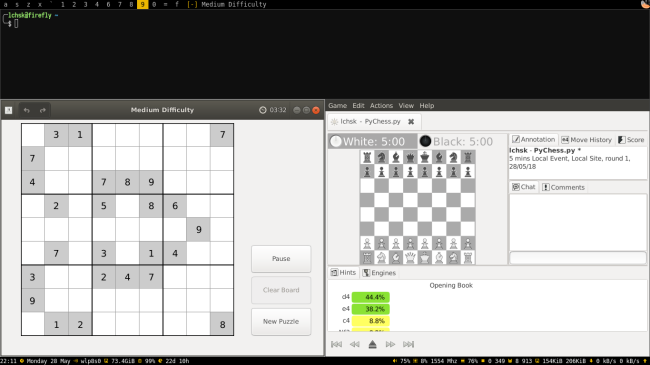
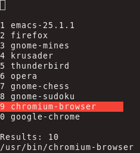

Modern user interfaces offer stunning graphic styles and impressive visual effects. However, there's a category of applications that is seemingly outdated but yet offers unparalleled productivity and unique experience in interaction with a computer.
When I first learned about window managers designed to prevent users from switching between a keyboard and a mouse, I became fascinated straight away. I was struggling with traditional user interfaces. I found them clunky and inefficient.
Computer users spend a lot of their time navigating windows of open programs. If you know what application you need, any time spent on finding the right window is wasted. I feel that workspaces, built into some traditional desktop environments like Gnome, don't solve the root cause. Having many programs open at the same time and using them effectively is just not an easy task.
That's the problem tiling window managers are trying to solve. They take over user's screen and position application windows in a predictable way. Usually, they will make each window fill up any remaining space left on the screen. Switching between different applications is accomplished primarily using keyboard shortcuts and hence offers a steeper learning curve. However, proficient users don't remember all those shortcuts by heart. With enough practice, using key bindings to control the system becomes second nature and is performed without consciously thinking about all the exact combinations.

xmonad with a terminal, chess and sudoku tiled in a single workspace
It might appear counter-intuitive, but I would argue the more shortcuts you want to use, the less time you'll have to spend memorising them. Key bindings should not be thought of as combinations that need to be remembered to speed up some actions. If a user commits to using keyboard as a primary way of controlling programs, he or she will eventually learn to perform whole series of tasks without resorting to pains of using a mouse.
It's hard to deny that becoming a proficient user of tiling window managers, Emacs, Vim and other similar programs can take a considerable amount of time. Why would one want to invest their time learning tools that to some might at first glance appear primitive?
Main reason is efficiency and it is a pretty good reason for those who use computers extensively. The time spent moving your hands between a keyboard and a mouse and navigating the cursor to click on a button can be saved by a couple of shortcuts. There are, however, other, more indirect benefits. Applications with a text interface usually offer no GUI at all or a very minimalistic one. That presents a great opportunity as it puts pressure on users to work on their configuration which in turn causes them to be more effective due to setups becoming more personal. And some applications, such as Emacs or xmonad, exploit it fully by using configuration files that are just source code which of course opens up nearly endless opportunities for personalisation.
It's also worth arguing that interaction between a human and a machine using a text interface is more natural because it lacks ambiguity and is thus less error-prone. Controlling a cursor with a mouse or a touchpad and moving it into the right place requires more effort than simply pressing a few keys.
Perhaps due to their specific nature, keyboard based programs encourage users to learn more about them and seek ways to improve how they work. That's why Emacs and Vim users are happy to devote their time building sizable configurations. And that's why those who use tiling window managers are always on the lookout for new applications matching their keyboard-heavy workflow.
When I felt none of available application launchers suited me, I've built my own (xstarter, website, source code) that I could control from terminal and that I use every day.

xstarter in action
No matter how many ways of interacting with a computer are out there, keyboards, various pointing devices, or voice, the simplest one can provide the most efficient and seamless experience.